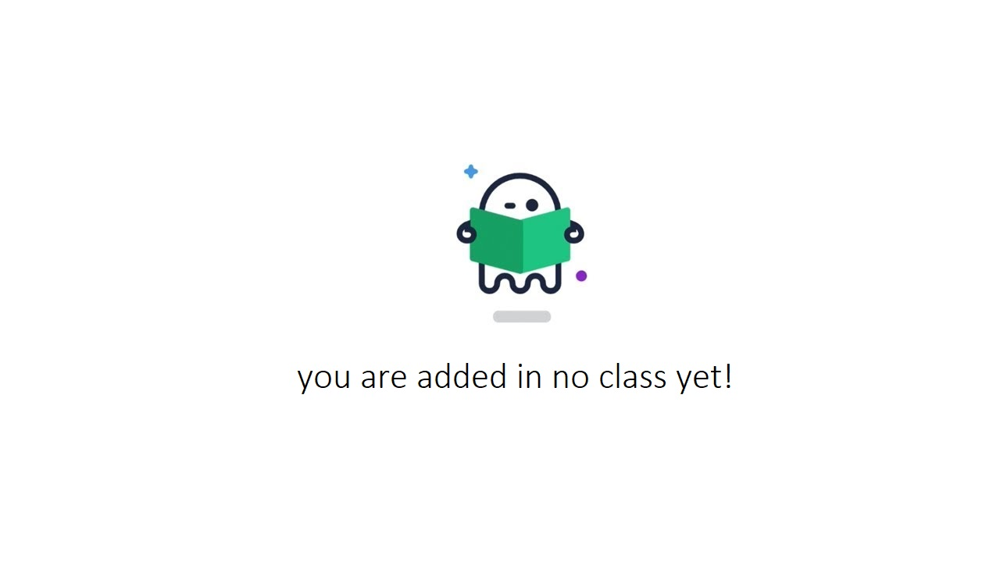

<div
  class="p-3 w-full h-full bg-gray-200"
  *ngIf="weeks.length > 0; else nodata"
>
  <div class="w-full p-2 bg-white">
    <mat-tab-group header-less-tabs [(selectedIndex)]="tabIndex">
      <mat-tab label="First">
        <mat-stepper
          class="asignments-stepper"
          orientation="vertical"
          [linear]="false"
          #stepper
        >
          <mat-step *ngFor="let week of weeks; let i = index">
            <ng-template matStepperIcon="error" matStepLabel>
              <div class="w-full flex justify-between">
                <span>
                  Week {{ i + 1 }} (<span
                    class="{{
                      week.asignments.length != 0
                        ? 'text-xl text-green-700'
                        : ''
                    }}"
                    >{{
                      week.asignments.length != 0
                        ? week.asignments.length
                        : "no "
                    }}</span
                  >
                  asignments)
                  <p style="font-size: 10px" class="text-gray-500">
                    {{ week.start_date | date }} - {{ week.end_date | date }}
                  </p>
                </span>
              </div>
            </ng-template>
            <mat-list>
              <ng-container
                *ngFor="let asignment of week.asignments; let i = index"
              >
                <mat-list-item
                  class="
                    flex
                    justify-between
                    my-2
                    cursor-pointer
                    hover:bg-gray-100
                  "
                  (click)="showAsignmentDetails(asignment)"
                >
                  <span class="text-lg font-bold"
                    >{{ asignment.title | longTextCutter }}
                    <span
                      class="
                        text-xs
                        font-normal
                        text-gray-600
                        flex
                        items-center
                      "
                    >
                      {{ asignment.description ?? "" | longTextCutter }}
                    </span>
                  </span>
                  <span class="text-sm text-gray-400 flex items-center">
                    {{ asignment.deadline | date }} (<span
                      class="font-bold text-lg pr-2"
                      >{{ getLeftedDays(asignment.deadline) }}</span
                    >
                    days left!)
                    <button
                      mat-icon-button
                      class="flex justify-center items-center mx-2"
                      (click)="showAsignmentDetails(asignment)"
                    >
                      <mat-icon class="mx-4 text-black cursor-pointer"
                        >forward_to_inbox
                      </mat-icon>
                    </button>
                  </span>
                </mat-list-item>
                <mat-divider
                  *ngIf="i != week.asignments.length - 1"
                ></mat-divider>
              </ng-container>
            </mat-list>
          </mat-step>
        </mat-stepper>
      </mat-tab>
      <mat-tab label="detail">
        <ng-template matTabContent>
          <EAP-asignments-detail
            *ngIf="selectedAsignment"
            [asignment]="selectedAsignment"
            [classId]="class.id"
            (onBack)="getBackFromDetail()"
          ></EAP-asignments-detail>
        </ng-template>
      </mat-tab>
    </mat-tab-group>
  </div>
</div>
<ng-template #nodata>
  <div class="w-full flex justify-center p-20">
    
  </div>
</ng-template>
